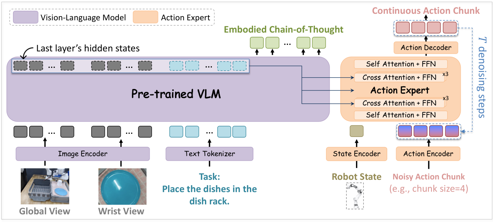
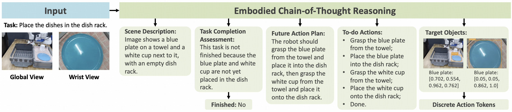
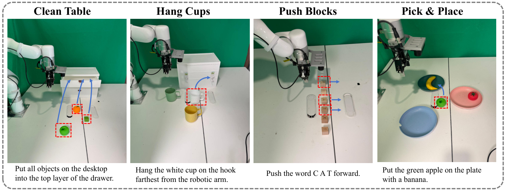

ZR-0密集具身思维链
如何训练一个直接行动的模型
训练时要求模型说清“看到了什么、做到哪里、接着干什么”；推理时不必把这些话生成出来，动作专家直接读取输入表征。关键不是思维链写得多长，而是它如何改变训练出来的表示。
约 60–90 分钟精读。新增 17 处带行号的官方源码与逐段解读。正文区分论文报告、源码行为与教学推导；可用左侧目录或手机底部目录跳转。
先知道它在解决什么
1.1 一句话：把推理写进训练信号，把动作留给连续控制
ZR-0 是中国人民大学与智谱相关团队的 2.6B 参数 VLA。它接收相机图像、任务指令与机器人状态，输出一段连续动作。核心做法不是让机器人每次先写一长段思维链再行动，而是在预训练时让 VLM 学会解释场景、任务进度、下一步与目标位置，再让动作模型读取被这种监督训练过的输入表征。论文 §1、§3
研究假设是：Franka 和 xArm 的关节角不能直接互换，但“杯子还没拿起 → 抓住杯子 → 放入篮子”的高层结构可以共享。自然语言与视觉定位为异构机器人提供共同的监督坐标系；连续动作仍要在具体接口上学习。
这篇最值得记住的三个问题
① 为什么状态和动作补零，仍然不等于语义对齐？
② 训练时监督 ECoT，推理时为什么可以完全不生成它？
③ 结果支持“预训练有效”，还是已经证明“六个 ECoT 组件各自有效”？
1.2 格式统一与语义统一，差在哪里
将六维、七维动作都补成 64 维，只解决了“张量能放进同一批次”的问题。两台机器人的第一个关节可能有不同旋转轴；同样的数值还可能分别代表关节目标、末端位置或增量。因此，共享模型仍可能记住每个数据源的局部规律，并没有真正学到可迁移的操作理解。
ZR-0 增加的监督要求模型明确回答：看到了什么、做到哪里、还需什么、操作哪个区域。作者希望这种中间监督能让不同身体的数据围绕相似的任务语义组织起来。这是方法的设计动机；不能仅凭总分提升，就断言表示空间已经实现完美对齐。
1.3 模型、语料和训练阶段，先分开
| 名字 | 是什么 | 别混淆 |
|---|---|---|
| ZR-0 | 从图像/语言/状态到动作块的策略模型。 | 不是奖励模型，也不是仿真环境。 |
| ProcCorpus-60M | 约 60M 帧、400K+ 轨迹、约 1,000 小时的机器人语料；ECoT 覆盖率 96.8%。 | 60M 是帧数，不是 60M 条独立演示。 |
| ProcVLM | 相关工作中的过程理解与进度奖励模型，也提供语料构造背景。 | ZR-0 借用语料，不等于用奖励模型做在线强化学习。 |
| 预训练 / 后训练 | 先用多源数据联合训练，再用各目标 benchmark 的演示分别适配。 | 不同 benchmark 的结果不是同一份最终权重零样本直接获得。 |
依据：论文 §3–4；ProcVLM 官方项目页。P2 ↗
1.4 阅读地图与证据标记
本文把三种内容分开：论文报告是作者给出的配置或结果；代码核对是固定提交的实际行为；教学推导 / 评论是为理解而做的演算或证据分析。自绘图都标明“教学示意”，原图保留出处。没有公开数值的训练总步数、预算、标注准确率，不自行补全。
↑ 回到封面先读原图，再看中文数据流
2.1 原论文 Figure 1：左边负责表征，右边生成动作
先看左下角：多路图像与任务文本进入 VLM。左上角有两类用途：输入位置的最后层隐状态送到右侧动作专家；ECoT 文本承担训练监督。右侧从状态和带噪动作出发，经注意力层与动作解码器，多次迭代得到动作块。图中的一块不是一次控制周期，更不是所有箭头都表示文本生成。

2.2 中文重画：把前向依赖和训练监督分开
2.3 输入、输出与张量形状
| 量 | 典型形状 / 含义 | 易混点 |
|---|---|---|
| 图像 oₜ | 当前时刻的多个相机视角；论文统一 resize 到 224×224。 | 多个视角不等于多个历史时间步。 |
| VLM 特征 fₜ | B×L×dᵥ；L 是多模态序列长度。 | 连续隐状态，不是解码后的中文或英文句子。 |
| 状态 sₜ | B×1×64（当前代码路径）；有效维数由数据接口决定。 | 64 包含补零，不表示 64 个关节。 |
| 动作 Aₜ | B×H×64，H 是预测的未来动作步数。 | H 与 DiT 迭代次数 N 不同。 |
| 状态/动作 token | B×(1+H)×d；由 MLP 投影。 | 一个动作步通常是一个高维 token，而不是一个数值维度一个 token。 |
论文 §3.1、§4.1；代码 动作头 C2。形状以所核对实现为例，B 为批次大小。
↑ 回到封面六个模块逐个拆：每一步干什么
3.1 数据接口：模型不会自动猜字段含义
- 为什么
- 不同数据源的相机名称、控制量、单位和状态维数不同，需要明确约定。
- 输入
- 图像、任务字符串、状态向量，以及 dataset entry 对应的字段配置和统计量。
- 处理
- 按相机与字段映射取数据；图像 resize；状态按训练统计量逐维缩放并补到 64 维；同时保留有效动作维度掩码。
- 输出
- VLM 输入张量、状态张量和 action mask。动作生成后，按动作统计量反归一化并裁出有效维度。
- 关键边界
- 补零与缩放不能替代标定、控制模式匹配或动作语义对齐。
这与 GR00T 的 Processor 在职责上相似，但 ZR-0 仓库用 dataset2feature.yaml 和 dataset entry 组织接口，不能把 GR00T 的配置文件名与 embodiment id 映射照搬过来。接口 / 归一化
3.2 VLM：训练“看懂”，输出给动作模型的是向量
- 输入
- 多路相机图像与任务指令；预训练时还提供 ECoT 标签用于语言预测。
- 计算
- 视觉编码与文本 token 进入多模态模型，提取最后层 hidden states。
- 输出
- 输入 prompt 位置的特征供动作专家读取；语言输出位置计算下一 token 损失。
- 意义
- 同一个“杯子”在不同相机、机器人和背景下，应仍能形成对任务有用的表征。ECoT 给这个过程增加显式监督。
- 别误读
- System 2 是架构比喻，不代表推理时一直运行一个独立、缓慢、显式的规划代理。
3.3 状态编码器：把传感器数字变成 token
归一化后的状态仍是数字数组。MLP 将 64 维状态映射到注意力模型需要的嵌入维数，作为状态 token。它告诉动作模型“身体当前在哪里”，用于决定动作幅度与方向。看到同一张图，如果末端位置不同，需要的动作也不同。
编码器并非正运动学求解器；除非另外写入结构，它是在训练中学习数值与动作之间的关系。状态错序、角度单位错用、夹爪开合方向相反，都可能产生形状正确但语义错误的输入。
3.4 动作编码器：处理的是候选动作，不是实际执行结果
训练时输入由真实动作和噪声混合而成的 Aτ，推理时从高斯噪声开始。动作 MLP 将每个未来动作步编码为 token，并加入流时间 τ 的编码。模型因而知道当前输入是“还很随机”还是“已经接近目标动作”。
动作序列位置还需要区分：块中第一步与第十步不能任意互换。公开实现可添加 action-position embedding。序列位置 i、环境时间 t、流时间 τ 是三种不同坐标。
3.5 DiT：状态/动作内部交流，再向视觉语言取信息
自注意力中，Q/K/V 都来自状态与动作 token，因此能在一个动作块内协调多个未来时刻。交叉注意力中，状态/动作作为 Query，VLM prompt 特征作为 Key 与 Value：动作 token 据当前任务从视觉语言序列中读取需要的信息。
Attention = softmax(QKᵀ / √d + M)V
Z：状态/动作 token；F：VLM 特征；M：允许读取哪些 token 的掩码。禁止的位置加 −∞，softmax 后权重为 0。
论文描述每组按 1 层自注意力 + 3 层交叉注意力重复，相比其引用的 GR00T N1 的 1:1 模式，增加了跨模态交互比例。这是架构选择；没有对应的比例消融，就不能独立断言 1:3 必然优于 1:1。实际层数要查看 checkpoint，代码默认截断组的问题见第 12 章。
3.6 解码器：输出速度场，再积分成连续动作
动作解码 MLP 将 DiT 输出投回动作维数。训练与每次去噪时得到的是对动作空间路径的速度场估计，不是直接要发送给电机的速度命令。Euler 用它更新候选动作；迭代完成后，动作向量的意义由接口决定，例如关节位置目标或末端位姿。
“速度场”是对生成路径的导数，不自动等于机器人实际关节速度。两者的时间轴不同。
↑ 回到封面为什么不生成思维链也能行动
4.1 训练序列里有 ECoT，动作分支却不读取它
记 P 为图像与指令构成的 prompt，R 为 ECoT 标签。训练时 VLM 处理串接序列 [P, R]，用 teacher forcing 预测 R 的下一个 token；动作专家仅可读取 P 位置的最后层隐状态。R 是监督目标，不是动作条件中必须出现的中间答案。
这避开了一种训练部署落差：如果训练时动作分支总能看到完美的真实 ECoT，部署时却要依赖可能错误、耗时的自生成 ECoT，动作条件分布就发生变化。ZR-0 主路径从设计上排除了这条依赖。
4.2 只屏蔽交叉注意力，为什么还不够
还需要 VLM 的注意力因果性。在论文的自回归设定下，prompt 位置的隐状态不能读取后面才出现的 ECoT 目标。于是，ECoT 虽然影响参数学习，却不会通过训练样本中的未来 token 泄漏进 prompt 特征。
| Query \ Key/Value | prompt P | ECoT R |
|---|---|---|
| VLM 的 prompt 位置 | 按模型的前缀 / 图像注意力规则 | 不能看未来答案 |
| VLM 的 ECoT 位置 | 可以读 | 只能读此前的 R token |
| 动作专家的交叉注意力 | 可以读 | 全部屏蔽 |
这里是块级教学表，不等同于所有图像 patch 都采用简单的文本三角掩码。关键不变量是 P → R 的未来信息不可逆流，动作分支 → R 的读取被禁止。
4.3 监督如何改变“看不见答案”的 prompt 特征
想象学生看图答题：训练时要求他说清“杯子在哪里、还剩哪一步”，会迫使理解图像与指令的参数变得更有用。虽然部署时不再要求他把解释写出来，学到的参数仍保留。这里没有神秘的“推理文本缓存”：保留下来的是权重与表征能力，不是当前帧那段没有生成的文字。
数学上可写成 F = hθ(P)。语言损失训练 θ，使 F 支持 ECoT 预测；动作损失也训练 θ，使 F 支持控制。推理时动作模型只需要 F。这说明为何删除文本解码路径在依赖关系上成立，并不保证任意删掉训练监督都不影响性能。
动手看：切换训练 / 推理，哪些路径还在？
教学依赖图，演示论文主路径；不是运行 ZR-0。
| 路径 | prompt 特征 | ECoT 输出位置 |
|---|---|---|
| 动作专家读取 | ✓ 允许 | ✕ 禁止 |
| 下一 token 监督 | 学习产生有用特征 | ✓ 计算语言损失 |
4.4 能省掉什么，不能声称省掉什么
省掉的是 ECoT 的逐 token 自回归解码。仍需要图像处理、VLM 的一次 prompt 前向，以及动作专家的 N 次迭代。单次 prompt 前向会同时产生多个输入位置的特征，不是只生成一个文字 token。动作迭代时可复用这一批视觉语言特征。
“无需生成 ECoT”是网络依赖关系的结论；“各种模式下完全无性能损失”需要专门实验。论文主结果证明这条直接动作路径能取得较好成绩，正文没有提供完整的 direct-action 与生成完整 ECoT 后行动的受控对照曲线，不将摘要中的表述扩写为普遍保证。
依据：论文 §3.1、§3.3、§3.4；公开仓库另有 subtask 模式，见第 12 章。
↑ 回到封面ECoT 不是一句“想一想”：六类标签
5.1 官方示例：同一帧被要求回答多个问题
下面是官方仓库的 ECoT 示例。它不是把六个组件都作为独立神经网络模块，而是将这些信息组织成结构化的生成监督。论文说明包含离散动作 token；图中的目标框、完成标记和待办步骤分别承担不同作用。


5.2 场景描述与进度判断：看见了什么，已经做了什么
Scene Description 描述对象、空间关系与环境。它让“图中有一个蓝盘子”成为可监督的语义输出，而不只从最终动作误差间接学习视觉。Progress Assessment 解释当前完成情况，并给出 Yes/No 完成标记。完成与否取决于视觉状态及任务，不等于时间经过了百分之几。
教学例子：任务是“把杯子放进篮子”，杯子已抓起但仍在篮子外。场景描述关注杯子与篮子的位置；进度判断应指出仍未完成。这个二元完成标记不是 ProcVLM 的连续进度奖励值，也不是直接用于 ZR-0 强化学习的回报。
5.3 未来计划与原子待办：意图如何逐级变细
Future Plan 是自然语言说明剩余目标，例如“把杯子移到篮子上方并放下”。To-Do Actions 将它拆成动词加对象的原子子任务，例如“抓住杯子”“移动到篮子上方”“放入篮子”。这种步骤语义可以跨本体复用。
两者相近但不完全相同：前者保留整体意图与时序解释，后者提供清晰、可重复的子目标边界。动作专家并不因此接收到一个符号规划器逐项下发的命令，论文主路径仍是读取当前 prompt 特征预测连续动作。
5.4 目标框：监督“该关注哪个对象”
Target Objects 用框坐标将对象名称落到图像区域上。它让“绿色苹果”不只是一串语言符号，还关联到当前相机里的具体位置。不同视角应各自解释坐标，图像 resize 后也需要保持一致。
不要把框坐标直接当作机器人末端坐标：2D 框既不提供完整深度，也没有自动完成相机到机器人基座坐标系的变换。公开数据示例使用按相机组织的 bbox 字段；论文中的通用 JSON 示例与具体存储格式不必逐字符一致。
5.5 FAST 离散动作：监督桥梁，不是部署动作头
第六项 Discrete Actions 使用 FAST tokenizer 将动作压缩为离散 token，加入 VLM 的语言建模监督。这些 token 保留本体相关的动作信息，不能把六项 ECoT 一概叫作“完全与身体无关”。
| 两种动作表示 | 出现在什么位置 | 用途 |
|---|---|---|
| FAST 离散 token | ECoT 文本监督流。 | 让 VLM 学习动作相关表征。 |
| 连续动作块 | DiT + MLP 的 flow-matching 分支。 | 推理时迭代生成，后处理后交给环境。 |
“训练序列里有动作 token”不代表推理一定通过自回归 token 解码输出动作。
5.6 密集监督有什么收益，也有什么代价
轨迹级标签只说整段成功与否；帧级 ECoT 在抓取前、抓取后、移动途中分别描述状态与剩余步骤，提供更细的语义锚点。但相邻帧高度相关，60M 帧不等于同量级的独立场景。自动标注也可能误认物体、过早判断完成或编造计划。
96.8% 是标注覆盖率，不是标注准确率，更不是策略成功率。标注 VLM 的质量、轨迹采样、遮挡与动作歧义会影响监督。论文讨论关键帧选择以降低标注成本；不能把这个未来方向写成 ZR-0 已经验证的方法。
依据：论文 §3.2、§5；官方数据扩展说明 C6；ProcVLM P2。
↑ 回到封面数据怎样混，训练分几个阶段
6.1 三类训练样本，两条损失支路
| 样本 | 提供什么 | 更新什么 |
|---|---|---|
| 带 ECoT 的机器人轨迹 | 图像、任务、状态、真实动作、ECoT 标签。 | 语言损失训练 VLM；动作损失训练动作专家并经特征回传 VLM。 |
| 一般视觉语言数据 | 图像与问答、描述、定位等文本目标。 | 只计算 VLM 语言建模损失，没有机器人动作监督。 |
| benchmark 后训练演示 | 该环境的观测与动作。 | 论文采用不含 ECoT 和一般 VL 混训的标准适配协议。 |
一般 VL 数据与机器人 ECoT 的作用不同：前者帮助保留通用视觉语言能力，后者把监督绑定到操作过程。论文提到 CapsFusion、Pixmo；官方 README 另报告 5M 一般 VQA 样本。精确混合权重、去重与每类数据总训练量不能仅从这几个数字推出。
6.2 归一化：数值尺度相近，物理意义仍不同
论文采用每维训练数据的 q01/q99 做 min-max 缩放，再把状态和动作补到 64 维。q01/q99 分别是第 1 与第 99 百分位，不是机械限位。状态统计量与动作统计量分别使用；训练与推理要沿用同一约定。
同一公式用于每个有效维度。超出统计区间时可超出 [−1,1]，最终截断行为由实现决定，不能把区间映射误读成所有值必然被夹到 [−1,1]。
教学例子：夹爪统计范围为 0–80 mm 时，20 mm 映射到 −0.5。关节维度可能用弧度与另一组统计量，因此不能把所有维度统一除以一个最大值。公开实现额外将归一化值夹到 [−15,15]，详见第 12 章。
6.3 补零与掩码：为什么需要两者
一条 7 维动作补到 64 维后，多出的 57 维只是占位。若把占位维也当作真实目标，模型可能花大量损失预算学习无意义的零。因此需要有效维度 mask，损失只聚合真实动作维度。
公开动作头不只在损失上乘 mask，还在训练噪声、带噪轨迹、推理初始噪声和 Euler 更新上使用它。这样补零维不会随着迭代被噪声带起来。掩码用来说明哪些维度有效，不会告诉网络该维是哪一种关节或控制量。
6.4 预训练与后训练参数对照
| 项 | 预训练 | 论文 benchmark 后训练 |
|---|---|---|
| 模型规模 | VLM 约 2.1B + 动作专家约 0.5B。 | 从共同预训练 checkpoint 分别适配。 |
| 动作 horizon H | 32。 | LIBERO：10；RoboTwin / RoboCasa / xArm：16。 |
| batch size | global 1,024。 | 64。 |
| 损失权重 α | 5。 | 报告为 1；无 ECoT / 一般 VL 混训，不据此声称仍有同样的 ECoT 损失。 |
| 优化器 | AdamW，β=(0.9,0.95)，ε=10⁻⁸。 | 不要将仓库通用脚本的默认值自动视为每项实验的完整配方。 |
| 学习率与数值 | 5% warmup；3×10⁻⁵ → 3×10⁻⁶ cosine；bf16；梯度裁剪 1.0。 | 目标环境协议决定适配过程。 |
配置来自论文 §4.1.3–4.1.4。DeepSpeed ZeRO、Flash-Attention 2、gradient checkpointing 用于训练效率，不是算法贡献本身。
6.5 新本体到底用哪套 MLP：不能沿用 GR00T 的答案
论文只说明状态/动作编码与解码由 MLP 实现，没有在方法段定义 GR00T 式的多本体 id 路由表。所核对公开代码更明确：三个分支的 category 数量都设为 1，训练和推理都创建全零 cat_ids。因此它在这条实现路径上共享同一槽位的 MLP。
共享入口不表示任意机器人即插即用。新的控制接口仍需要匹配的数据字段、统计量、mask 与训练适配。benchmark 的做法是从共同预训练模型分别后训练，而不是给每个未知机器人临时选一个“最像”的 MLP。代码中出现 CategorySpecificMLP 这个类名，也不能单凭名字断定实际启用了多个本体分支。
代码核对：flow_matching_action_head.py C2 的构造器、forward 与 get_action；与 GR00T 多分支解释对照阅读。
↑ 回到封面训练目标与梯度：把公式算一遍
7.1 语言损失：让模型预测结构化的解释
P 是任务与图像 prompt，r 是 ECoT 序列。训练时提供此前的目标 token，预测下一 token；这不要求部署时仍生成整段 r。
损失鼓励模型给正确解释更高概率。这里的“正确”指数据标签，不自动等于环境真相；自动标注错误会成为噪声监督。语言损失没有经过动作专家，所以它不会直接更新 DiT。
7.2 Flow matching：不是拟合“噪声大小”，而是拟合方向
记真实动作块为 A，噪声为 ε，生成路径的时间为 τ。训练构造两者之间的一条直线路径，并预测它的导数：
u* = dAτ/dτ = A−ε
LFM = E[ ‖vθ(P,s,Aτ,τ) − (A−ε)‖² ]
τ=0 是噪声端，τ=1 是真实动作端；状态、指令与图像共同决定条件分布。工程实现对有效动作维度使用 mask。
教学例子：某个归一化动作维的真实目标 A=0.8，抽到 ε=−0.4。τ=0.25 时，输入为 −0.1；训练目标速度是 1.2。若网络预测 0.9，此维平方误差为 (0.9−1.2)²=0.09。模型看到的是带噪输入，不是直接把真实动作拿来当推理输入。
7.3 两个损失如何共同塑造 VLM
∇θᵥL = ∇θᵥLNTP + α∇θᵥLFM
∇θₐL = α∇θₐLFM
θᵥ 为 VLM 参数，θₐ 为动作专家参数。公式描述论文的联合训练；参数冻结或 detach 会改变实际更新路径。
动作损失通过交叉注意力读到的 fₜ 回传 VLM：动作不对，也会推动视觉语言表征适应控制；ECoT 损失让表征保留可解释的任务与定位信息。α=5 不表示模型“80% 学动作、20% 学语言”，因为两个损失的原始尺度、token 数和梯度范数不同。
公开仓库有 detach_vlm_outputs_for_action_expert 开关。打开后，动作损失不再通过 fₜ 回传 VLM；若同时冻结 VLM，语言损失也不能改变冻结权重。这些模式不能与论文的端到端联合训练一概而论。
7.4 为什么动作分支没看 ECoT，ECoT 仍有用
信息流与学习流不同：一次前向中，动作模型没有读取当前样本的 ECoT；跨很多优化步后，ECoT 训练已经改变了 VLM 的权重。部署时读取的 prompt 特征来自这些更新过的权重。它是通过共享参数发生的迁移，不是将答案文字藏在后面的 token 里偷偷读取。
一个合理检验是固定其余训练配方，只移除 ECoT 监督，比较结果与表征诊断。论文提供的消融更粗，跳过了整段预训练；证据能支持到哪里，见第 10 章。
7.5 Beta 时间采样有一个需核对的符号问题
论文写 τ 从 Beta(1.5,1.0) 采样，并称强调较噪时刻。但在其公式 Aτ=(1−τ)ε+τA 下，τ 越大反而越接近真实动作，Beta(1.5,1) 也更偏向较大的值。公开代码并非直接返回 Beta 样本，而是做 (noise_s − sample) / noise_s 的变换。
复现时以同一时间约定贯穿全流程这里记录论文措辞与代码时间参数化的差别，不自行替作者修改公式。采样分布、噪声/数据端点、训练目标符号和 Euler 方向必须一起核对，否则很容易把正确的公式用反。
依据：论文 §3.3；联合模型 C4、sample_time / 损失 C2。
↑ 回到封面推理闭环：从一帧观测到动作执行
8.1 一次决策的八个步骤
- 收集观测。获取当前相机视图、机器人状态与任务指令，保持时间和字段约定。
- 预处理。图像 resize，状态归一化、补齐；准备有效动作维度 mask。
- VLM 单次前向。只处理 prompt，获取动作专家所需的输入位置特征。
- 初始化候选动作。在有效维度抽取高斯噪声，形状为 H×64。
- 状态与候选动作编码。加上 τ 信息，经自注意力与交叉注意力预测速度场。
- Euler 更新。按 Δτ=1/N 更新候选动作，重复 N 次；这不是把环境执行 N 次。
- 后处理与执行。还原动作尺度、取有效维数，按环境接口执行指定数量的动作步。
- 重新观测。执行后用最新输入再规划，形成观测—动作闭环。
8.2 三个时间轴，用一个表分开
| 记号 | 发生在哪里 | 一个例子 |
|---|---|---|
| 环境时间 t | 真实或仿真的控制序列。 | 机器人在第 100 个观测步。 |
| 动作块索引 i | 当前预测内的未来步。 | H=16，对应 16 个未来动作目标。 |
| 流时间 τ / 迭代 N | 单次动作生成内部的数值积分。 | N=5，从 τ=0 经 5 次更新到 τ=1。 |
H=16、N=5 不等于“机器人只执行 5 步”，也不表示“每个动作运行 16 次去噪”。一次 DiT 前向同时处理整个候选动作块。推理执行多少步再观测，需要明确 execution horizon，不能默认等于 H。
8.3 Euler 怎么算：用一个已知终点的教学实验
Δτ = 1/N，A⁰ ∼ N(0,I)
最终 A¹ 为归一化动作块，再经过后处理。训练时可得到监督目标 A，部署时无法知道正确终点，只能靠网络预测速度场。
动手算：一步步从噪声走向目标
为解释积分，教学工具预先给定终点并使用理想恒定速度；不运行真实模型，也不模拟真实策略成功率。
真实网络的预测速度不是恒定真值，会随候选动作和 τ 改变；误差会影响积分结果。更多积分步可能改善数值近似，但增加延迟，也不保证动作更可靠。需要在目标硬件和任务上测试 N 与成功率的关系。
8.4 90 ms 是什么频率，为什么不能直接写成机械臂 Hz
论文 §3.4 报告 A6000、bf16 下约 90 ms/动作块；仓库 README 的具体配置是单路 224×224 相机、5 次去噪、torch.compile，总计 88 ms，其中图像处理 4 ms、VLM 49 ms、动作专家 35 ms。对应约 11.37 次模型请求/秒，不是机械臂执行器的底层伺服频率。
论文 xArm 数据控制频率为 5 Hz。一块含 16 个动作并不意味着每 90 ms 都能在物理世界执行完 16 步；端到端闭环还包括通信、环境推进、执行与重规划。多路相机、积分步数、网络负载改变后，原延迟不应直接沿用。
论文内有不一致的延迟口径§3.4 写约 90 ms / A6000，而结论写约 100 ms / H100。本文保留两处差异，以正文及 README 的可见配置解释 90 ms，不将其合成一个统一硬件测量，也不据此估算模型在你电脑上的速度。
8.5 为什么动作块越长，反馈可能越迟
长块减少模型调用次数，能表达短期连贯运动；但如果整块执行后才重规划，期间目标移动、接触失败或夹爪打滑，策略不能立即纠正。只执行块的前 k 步再观察能提高反馈频率，却增加请求开销。这是控制闭环设计的问题，不能仅靠“语言推理更强”解决。
依据：论文 §3.4、§4.1；README S1、Policy / server C5。
↑ 回到封面实验结果：分数要连同协议一起读
9.1 先看训练数据和评测样本数
| 环境 | 目标阶段训练 | 测试与指标 |
|---|---|---|
| LIBERO / 单臂 | 40 个任务，共 1,693 条训练轨迹；一个模型覆盖全部任务。 | 每任务 50 个 episode；二元成功率。 |
| RoboTwin 2.0 / 双臂 | 50 任务，每任务 50 条 clean + 500 条 randomized；总计 27,500 条。 | 每任务、每种设置 100 个 episode；成功率。 |
| RoboCasa GR-1 Tabletop / 人形 | 一个模型学习 24 个桌面任务。 | 每任务 100 个 episode；成功率。 |
| xArm / 真机 | 2,000+ 遥操作轨迹、4 类任务、50+ 物体；采集控制 5 Hz。 | 每类 10 次；按任务子步骤定义 0–100 进度分数。 |
“一个模型覆盖全部任务”发生在同一个 benchmark 内；三个仿真 benchmark 从共同预训练 checkpoint 分别后训练。模型在训练任务的变化场景、物体位置和指令改写下测试，与完全未训练过的新任务、新身体零样本迁移不是同一种主张。
9.2 LIBERO：重点看长程子集，而不是只看总平均
| Model | LIBERO-Spatial | LIBERO-Object | LIBERO-Goal | LIBERO-10 | Avg. |
|---|---|---|---|---|---|
| OpenVLA | 84.7 | 88.4 | 79.2 | 53.7 | 76.5 |
| CoT-VLA | 87.5 | 91.6 | 87.6 | 69.0 | 83.9 |
| π₀ | 96.8 | 98.8 | 95.8 | 85.2 | 94.2 |
| NORA-1.5 | 97.3 | 96.4 | 94.5 | 89.6 | 94.5 |
| π₀.₅ | 98.8 | 98.2 | 98.0 | 92.4 | 96.9 |
| GR00T-N1.7 | 97.7 | 97.5 | 98.5 | 94.4 | 97.0 |
| DeepThinkVLA | 96.6 | 99.0 | 96.4 | 96.2 | 97.0 |
| MolmoAct2 | 97.8 | 100.0 | 97.8 | 93.2 | 97.2 |
| ZR-0 | 97.4 | 99.4 | 98.0 | 96.4 | 97.8 |
上表按论文 Table 1 转录，单位均为成功率 %；是该论文列出的比较，不是持续更新的排行榜。
ZR-0 平均 97.8%，相比表中 GR00T-N1.7 的 97.0% 高 0.8 个百分点。差距更明显的是 LIBERO-10：ZR-0 为 96.4%，π₀.₅ 为 92.4%，相差 4.0 个百分点。Object 等子集已较饱和，平均数容易遮住长程任务差别。
同时，ZR-0 并非每个子集都第一：例如表中的 π₀.₅ 在 Spatial 更高，MolmoAct2 在 Object 达到 100%。不能把总平均领先解释成所有能力均优于其他模型，更不能由这里的 0.8 点推出对 GR00T 的普遍优势。
9.3 RoboCasa：均值更高，关柜门类却明显落后
| 方法 / 任务 | JoyAI-RA | ZR-0 | 如何读 |
|---|---|---|---|
| 24 任务平均 | 63.2 | 69.3 | ZR-0 高 6.1 个百分点。 |
| CuttingboardToTieredbasket | 36.0 | 80.0 | 搬运放置强项，差 44.0 点。 |
| PlacematToPlate | 38.0 | 88.0 | 物体—目标关系与放置。 |
| BottleToCabinetClose | 84.0 | 39.0 | 放入后还要关门，多阶段接触操作。 |
| CanToDrawerClose | 90.0 | 47.0 | 同样明显落后。 |
作者将差别与预训练中 pick-and-place 更常见、关门类较少联系起来。这是合理的数据覆盖解释，但论文没有给出足够的逐技能数据统计与受控重采样实验，不能视为已经排除控制精度、动作表示、任务难度等因素的因果证明。完整 24 任务表在附录。
9.4 RoboTwin：泛化差距小，但领先幅度也要看量级
| 模型 | Clean % | Randomized % | 下降（百分点） |
|---|---|---|---|
| π₀ | 65.92 | 58.40 | 7.52 |
| π₀.₅ | 82.74 | 76.76 | 5.98 |
| X-VLA | 72.80 | 72.84 | −0.04 |
| Motus | 88.66 | 87.02 | 1.64 |
| LingBot-VLA | 88.56 | 86.68 | 1.88 |
| ZR-0 | 88.70 | 87.98 | 0.72 |
域随机化包含杂物、光照、背景、桌高与语言指令等因素。ZR-0 的平均下降较小，支持其在这组设置下具备较好的鲁棒性。但 Clean 只比 Motus 高 0.04 点，不能没有方差与重复种子就宣称显著领先。
某些任务 Randomized 分数高于 Clean 也不矛盾：评测样本与场景分布不同，有限采样有波动；更强的数据多样性可能有帮助，但单个分数反转不能证明某种训练组件是原因。完整 50 任务结果保留在附录。
9.5 原论文 Figure 2：四类真机任务在测什么

9.6 真机进度分数：不是 76% 成功率
| Method | Pick & Place | Hang Cups | Clean Table | Push Blocks | Avg. |
|---|---|---|---|---|---|
| π₀.₅ | 56.7 | 85.0 | 63.3 | 66.1 | 67.8 |
| ZR-0 | 66.7 | 70.0 | 73.4 | 94.0 | 76.0 |
平均进度分数为 76.0 对 67.8，相差 8.2 分；OCR 相关 Push Blocks 差 27.9 分，是最大收益项。Hang Cups 则为 70.0 对 85.0，ZR-0 落后 15 分。理解得更好与操作得更准，是两种相关但不同的能力。
作者将 OCR、空间指代与长程任务收益联系到 VL 混训和 ECoT。这能为机制提供解释，但缺少分别移除 VL 与各 ECoT 组件的真机对照，不能精确分摊收益。每类仅 10 次试验，且论文没有完整报告重复训练种子的置信区间；这些结果应作为有限设置下的证据。
本章数值与协议：论文 §4、Tables 1–4；完整数表见第 15 章。
↑ 回到封面消融与证据边界：结论能说多强
10.1 最重要的消融，究竟移除了什么
| Method | LIBERO-Spatial | LIBERO-Object | LIBERO-Goal | LIBERO-10 | Avg. |
|---|---|---|---|---|---|
| ZR-0 | 97.4 | 99.4 | 98.0 | 96.4 | 97.8 |
| - w/o ECoT PT | 96.8 | 98.6 | 94.8 | 92.6 | 95.7 |
论文对 w/o ECoT PT 的定义是：VLM 从 Qwen3-VL-2B-Instruct 初始化，动作专家随机初始化，跳过整个 ECoT 监督预训练阶段，直接在 LIBERO 后训练。因此两组不只差“有没有 ECoT 文本”，还差机器人预训练、一般 VL 混训、动作专家初始化等。
均值差 2.1 个百分点，LIBERO-10 差 3.8 点。它支持完整预训练方案带来了可迁移收益，不能单独测出“其他条件固定时，仅 ECoT 监督的净收益”。
10.2 如果要把机制证明得更完整，还缺哪些对照
- 等数据、等算力，移除 ECoT：仍保留相同机器人轨迹与动作训练，仅去除 ECoT 文本损失。
- 移除一般 VL：区分通用知识保留与机器人过程监督的作用。
- 六组件逐项 / 组合消融：判断目标框、待办步骤、FAST token 是否互补，是否存在冗余。
- 密集与关键帧：在相近标注成本或训练预算下比较覆盖率、准确率与最终表现。
- 1:1 与 1:3 注意力比例：固定参数量和训练预算，评估增加跨模态交互的贡献。
- 直接动作与生成解释后动作：同时报告时延、成功率、失败类型和配套训练设置。
这些是本文提出的研究建议，不是论文已经完成的实验。一个方案整体有效，与其中每个设计都被独立证明有效，是不同层次的证据。
10.3 跨本体迁移，不等于未见机器人零样本控制
论文从同一预训练 checkpoint 适配到单臂、双臂、人形三组目标，说明共同预训练具有跨本体适配价值。它没有因此证明完全新接口可以不提供数据直接控制，也没有在主表给出“对每一个本体做留一预训练”的系统性实验。
还应询问预训练语料与目标 benchmark 的交集、任务相似性、去重和过滤规则。跨本体的“见过/没见过”可以指相同硬件、相同控制接口、同类任务或相同场景，必须明确是哪一层。论文主结果不应自动升级为所有层面的严格零样本泛化。
10.4 视觉鲁棒性不自动带来接触稳定性
随机光照背景下成功，主要检验视觉与任务条件变化；挂杯、关门、插接还涉及精确定位、接触动力学、夹持与反馈。ECoT 能帮助找到杯子与挂钩，但不会凭空补足稀缺的精细接触演示。
因此，实际复现不应只记录成功率。最好另外统计目标选择错、抓取失败、碰撞、放置偏差、终止判断错误和动作震荡，让改进方向能对应到数据、视觉、控制或闭环设计。
10.5 哪些结论相对稳，哪些应保留
| 可以据当前证据说 | 不应直接说 |
|---|---|
| prompt-only 条件路径允许推理跳过 ECoT 解码。 | 模型在任何情形都已进行了与文字等价的完整隐式推理。 |
| 完整预训练方案优于其从基础 VLM 直接后训练的消融。 | 2.1 点收益全部由 ECoT 或某一个组件造成。 |
| 在所列任务与协议下获得较强结果，且有明确弱项。 | 普遍击败所有 VLA、完成通用机器人智能。 |
| 约 1,000 小时语料下的结果具有数据效率启发。 | 仅凭不同模型的数据小时数，就证明严格的样本效率领先。 |
和 GR00T 放在一起：相似外壳，监督不同
11.1 先对齐比较对象：N1、N1.7 不是同一配置
ZR-0 论文用 GR00T N1 的双流与 1:1 注意力模式解释架构渊源；LIBERO 结果表里列的是 GR00T-N1.7，RoboCasa 表里列的是 N1.6。这些名字指不同版本，不能拿 N1 的层配置解释 N1.7 的所有工程细节。
| 问题 | ZR-0 | GR00T 笔记中的对应视角 |
|---|---|---|
| 基本外壳 | VLM + 交叉注意力 DiT + 连续 flow matching。 | N1 系列同属视觉语言表征配合连续动作专家路线。 |
| 本篇强调的增量 | 密集 ECoT 监督与 prompt-only 动作条件。 | 不可只看都有 System 1 / 2 就认为贡献一样。 |
| VLM 初始化 | Qwen3-VL-2B-Instruct。 | N1 与 N1.7 的 VLM 来源不同，按具体版本核对。 |
| 本体入口 | 核对代码用单一 MLP 槽位与 cat_ids=0。 | 先前分析的 N1.7 代码用 embodiment id 选择多本体参数。 |
| 推理文本 | 论文主路径不生成 ECoT；仓库另有 subtask 扩展。 | 不要把 VLM hidden states 直接等同于生成文字。 |
| 动作步数 | 预训练 H=32，各后训练任务 H=10/16。 | 属于任务与 checkpoint 配置，不是架构固定常数。 |
11.2 为什么这更像“训练表征”，不是外挂规划器
外挂规划器通常先产生显式计划，再将计划传给低层控制器。ZR-0 主路径没有这条必要的中间文本依赖。它通过语言目标训练 VLM，让动作模型读取共享表征。评价它时，要关注预训练监督是否提高适配、定位和指令理解，而不是只看生成的解释听起来是否合理。
这也意味着部署的可解释性有限：可以另行生成 ECoT 供观察，但生成文本与直接动作路径之间没有逐条忠实性保证。要声称“这句解释就是本次动作的真实原因”，需要额外的干预或一致性分析。
11.3 看下一篇 VLA，可以沿用哪些问题
依次问：输入是什么 → 输出怎样表示 → 谁能看谁 → 训练监督在哪里 → 哪些参数收到梯度 → 部署删掉哪些路径 → 动作执行后何时重新观察 → 结果到底在哪个协议成立。这个顺序比从模型名字或总参数量出发更容易发现真正差异。
↑ 回到封面读代码：论文主路径与仓库扩展分开
12.1 固定版本，才知道自己核对了什么
本文核对官方仓库提交 b1440d4cf27624da2b1aa31268637cf46601c15d，记录日期为 2026-10-19。源码链接固定到该提交；论文采用 arXiv v2（2026-07-01）。后续仓库变动可能修正或扩展这些行为，不能把当前默认值倒推为所有发布 checkpoint 的配置。
12.2 推理有两个模式，不要串用
direct_action 对应本篇主线：VLM prompt 前向后直接调用动作专家。subtask_then_action 是仓库的另一个模式，会先生成 subtask，再将相关序列送回模型；backbone 通过 sub_task_flag 选择 prompt-only 或 prompt-plus-subtask 掩码。
因此，论文“推理不生成 ECoT”的描述不能覆盖仓库所有可选入口。若你启用了 subtask 模式，时延、可见 token 和训练依赖都要重新核对，不能继续套用 direct-action 的计算图与 88 ms 测量。
12.3 类名里有多本体，不等于真的用了多套参数
动作头保留 CategorySpecificMLP 与 MultiEmbodimentActionEncoder 名字，但实际构造的数量是 1，并在 forward / get_action 中使用零索引。这是一个很好的源码阅读例子：看实例化参数与调用路径，比看类名更可靠。
公开代码支持这条单槽位路径；论文也未提供一份完整的逐本体索引表。本文据此解释公开实现，不断言作者的每一个历史训练作业都与这一默认源码逐项相同。
12.4 1:3 模式、默认层数与 checkpoint 三者要一起看
DiT 循环在 idx % 4 == 0 时用自注意力，其余层用交叉注意力，体现“一自三交”的周期。动作头默认配置的 num_layers=9 会在第 0、4、8 层使用自注意力，因此整个有限栈是 3 层自注意力与 6 层交叉注意力，并非总数严格 1:3。
这不否定论文描述的重复模式，而是说明最后一组可能被层数截断。复现时读取实际 checkpoint 的动作专家配置，不能只根据论文示意图推定总层数、参数量与推理耗时。
12.5 归一化与 mask 的两个实际细节
min_max_norm 将 q01/q99 映射到 −1/+1，但将最终越界值限制到 [−15,15]，不是 [−1,1]。所以统计区间外的读数仍保留一定幅度信息；你自己改成严格 clip(−1,1) 会改变模型输入分布。
推理的 infer_action_mask 由有效动作维数构造，并用于噪声与更新。若更换数据接口后 mask 没变，模型可能忽略真正有效的后几维，或把占位维发送到环境。与字段错序一样，这种问题可能完全不触发张量形状错误。
12.6 一般微调脚本，不等于论文后训练协议
仓库通用单机脚本设置联合语言/动作损失、H=32、动作权重 5；README 的 LIBERO 后训练示例则使用 loss_type=action、H=10。脚本名包含 finetune，并不能证明它与某张结果表的完整实验设置相同。
如果要复现或接自己的机器人
13.1 从一个受支持任务开始，先验证数据闭环
优先使用官方提供的已后训练 checkpoint 与对应 benchmark。先让同一套数据统计量、字段配置、动作维数与环境接口跑通，再改模型或训练新机器人。不要把 base model 下载完成当作已经适配目标机器人。
模型基础权重与 LIBERO、RoboTwin、RoboCasa 权重在 README 分别列出；页面底部提供官方入口。这里不上传数 GB 的权重，也没有宣称在本地实际运行了机器人评测。
13.2 数据接口的最小理解
# 教学伪代码：只表达依赖关系，不是官方可直接运行脚本
cfg = 读取目标数据源的字段约定()
stats = 读取该数据源的训练统计量()
图像, 状态, 指令 = 依约定整理当前观测(cfg)
状态输入 = 逐维缩放并补齐(状态, stats.state)
候选动作 = 模型直接动作推理(图像, 状态输入, 指令, 有效维掩码)
物理动作 = 还原尺度并裁出有效维(候选动作, stats.action)
执行前若干步(物理动作)
重新获取观测()这里的 dataset entry 是 YAML 中的名字，不是 embodiment id，也不是随便填一个机器人型号字符串。它需要对应数据路径、字段与统计量等约定；选择了别的数据源配置，即便模型没有报错也可能使用错误尺度。
13.3 新机器人的数据准备顺序
- 先定义控制语义：关节 / 末端、位置 / 增量、单位、旋转表示、夹爪约定。
- 同步保存图像、状态、任务与动作序列，明确采样频率和下一动作与当前状态的对应关系。
- 组织为官方支持的 LeRobot v2 数据格式，登记字段并计算训练统计量。
- 选择动作 horizon，构造有效维 mask；验证少量轨迹的读入与反归一化。
- 从预训练 checkpoint 做适配训练，保留训练外验证数据，评估动作误差与闭环任务表现。
- 若要重做 ECoT 联合预训练，再接入结构化标签与一般 VL 数据；这与最小动作后训练不是同一工作量。
13.4 有哪些现象能帮助定位错误
| 现象 | 先核对 | 为什么 |
|---|---|---|
| 输出数值看着平滑，位置总不对。 | 单位、状态/动作统计量、字段顺序、绝对/相对控制。 | 尺度或语义错，不一定产生数值异常。 |
| 夹爪一直反向或不动。 | 夹爪维、开合范围、mask、有效维数。 | 补零维被当成真实维，或开合约定相反。 |
| 挑对物体但挂不上 / 关不了门。 | 接触演示、末端精度、相机标定、闭环间隔。 | 语义理解正确不等于精细控制已学好。 |
| 显存 / 时延与 README 差很多。 | 相机数、图像尺寸、序列长度、去噪步数、compile、硬件。 | 计算负担与测量条件不一致。 |
13.5 开放问题：如何把本文变成一个研究计划
三个有明确验证路径的方向：用等成本关键帧 ECoT 替代全帧标注；做数据/预算匹配的 ECoT 组件消融；把长程语义失败与精细接触失败分开评估。若使用人类第一视角视频，只能先为 VLM 提供语义监督，不能把没有机器人动作标签的视频直接当作真实机器人控制监督。
↑ 回到封面把容易问住的地方再讲一遍
14.1 十个自测问题：先回答，再展开
① 没生成 ECoT，模型是不是就没推理？
不能只凭有没有文字判断内部计算。但本文能明确证明的是：动作路径使用 ECoT 监督训练过的 prompt 特征，不需要逐 token 文本生成。它是否等价于完整符号推理，不是当前实验已经解决的问题。
② 动作专家看不到 ECoT，为什么训练它还有意义？
ECoT 损失改变共享 VLM 参数；更新后的参数产生更适合任务的特征。动作分支通过这些特征受益。训练监督与一次前向中的输入依赖要分开。
③ 训练时整段 ECoT 都在输入里，会不会答案泄漏？
需要同时保证 VLM 的 prompt 位置不看未来答案，以及动作 cross-attention 不看 ECoT 位置。只遮住后者，却允许未来答案流入 prompt 特征，并不足以阻止泄漏。
④ q01/q99 把状态统一后，跨本体问题解决了吗？
只统一了数值尺度。同样的第 1 维仍可能是不同关节或不同控制量。语义对齐是另一层任务，ECoT 的目标就是在高层监督上提供共享结构。
⑤ ZR-0 也是每种机器人一套 MLP 吗？
不要从 GR00T 推断。本文核对的 ZR-0 公开代码仅实例化一个槽位，并使用零 cat_ids。新接口仍需配置和适配训练，单槽位不代表通用控制保证。
⑥ FAST 动作 token 和 DiT 动作，是重复做两次控制吗？
不是。FAST token 为 VLM 的结构化语言监督提供动作相关信号；连续动作分支通过 flow matching 产生部署输出，direct-action 路径不必先解码 FAST token。
⑦ H=16、N=5，是 80 个动作吗？
不是。H 是候选动作块的未来步数，N 是对整块候选动作做数值更新的次数。最终仍得到 H 步动作，环境实际执行的步数由调用方设定。
⑧ 真实机器人平均 76.0，是否 76% 的任务成功？
不是。这里使用任务子步骤进度分数，范围 0–100；仿真表的 SR 才是按 episode 成败计算的成功率，两者不能混为同一指标。
⑨ 消融下降 2.1 点，是否 ECoT 净收益就是 2.1？
不是。对照跳过了整段预训练，从基础 VLM 和随机动作专家直接后训练。它测到完整预训练方案的收益，没有单独隔离 ECoT。
⑩ 从同一个 base model 适配三个身体，是一个模型同时零样本控制它们吗？
不是。论文为各 benchmark 分别后训练，然后在各自环境测试。共同初始化、跨本体迁移、同时多本体部署、未知身体零样本控制，四者需要分别举证。
14.2 一分钟复述版
用自己的话讲 ZR-0
它认为不同机器人的低层动作难以直接对齐，但场景理解、任务进度与子目标可以共享。于是，用约 60M 帧语料上的密集 ECoT 和一般 VL 数据监督 VLM，同时训练 DiT 生成连续动作。动作分支只看 prompt 特征，避免依赖 ECoT 文本，所以推理只需一次 VLM 前向和多步动作积分。多环境后训练取得较强结果，但精细接触有弱项，现有消融也没独立分离 ECoT 的贡献。
14.3 再次阅读时，把这些词区分开
| 词 | 本篇含义 |
|---|---|
| VLA / VLM / DiT | 视觉语言动作策略 / 视觉语言模型 / 用于生成的 Transformer 动作专家。 |
| ECoT / prompt / hidden states | 训练的结构化解释目标 / 当前图像任务输入 / 连续中间表征。 |
| state / action / velocity field | 身体当前读数 / 控制接口目标 / 生成路径上更新动作的导数。 |
| horizon / denoise steps / execution steps | 预测多少步 / 生成迭代多少次 / 环境实际先执行多少步。 |
| annotation coverage / accuracy / SR | 有标签的覆盖比例 / 标签是否正确 / 策略任务成功比例。 |
附录：把完整实验数表留在手边
以下三张表从 arXiv v2 的 HTML 数值转录，保留任务与模型对应关系；排版适合横向滚动。论文 Table 1、4、5 已在正文展示，这里补充 Table 2、3、6，便于检查平均数背后的任务差异。
15.1 RoboCasa GR-1：完整 24 任务（Table 2）
| Task | GR00T | Qwen3PI | VP | ABot | JoyAI | ZR-0 |
|---|---|---|---|---|---|---|
| -N1.6 | -VLA | -M0 | -RA | |||
| BottleToCabinetClose | 51.5 | 26.0 | 54.0 | 86.0 | 84.0 | 39.0 |
| CanToDrawerClose | 13.0 | 62.0 | 72.0 | 74.0 | 90.0 | 47.0 |
| CupToDrawerClose | 8.5 | 42.0 | 44.0 | 48.0 | 48.0 | 20.0 |
| MilkToMicrowaveClose | 14.0 | 50.0 | 74.0 | 46.0 | 84.0 | 45.0 |
| PotatoToMicrowaveClose | 41.5 | 42.0 | 34.0 | 50.0 | 70.0 | 59.0 |
| WineToCabinetClose | 16.5 | 32.0 | 48.0 | 66.0 | 54.0 | 40.0 |
| CuttingboardToBasket | 58.0 | 40.0 | 66.0 | 70.0 | 88.0 | 82.0 |
| CuttingboardToCardboardbox | 46.5 | 46.0 | 54.0 | 58.0 | 46.0 | 79.0 |
| CuttingboardToPan | 68.5 | 60.0 | 74.0 | 76.0 | 92.0 | 92.0 |
| CuttingboardToPot | 65.0 | 40.0 | 54.0 | 66.0 | 80.0 | 85.0 |
| CuttingboardToTieredbasket | 46.5 | 44.0 | 56.0 | 38.0 | 36.0 | 80.0 |
| PlacematToBasket | 58.5 | 44.0 | 48.0 | 52.0 | 76.0 | 78.0 |
| PlacematToBowl | 57.5 | 52.0 | 74.0 | 66.0 | 52.0 | 87.0 |
| PlacematToPlate | 63.0 | 50.0 | 70.0 | 60.0 | 38.0 | 88.0 |
| PlacematToTieredshelf | 28.5 | 28.0 | 26.0 | 26.0 | 14.0 | 46.0 |
| PlateToBowl | 57.0 | 52.0 | 52.0 | 54.0 | 48.0 | 82.0 |
| PlateToCardboardbox | 43.5 | 40.0 | 44.0 | 48.0 | 38.0 | 81.0 |
| PlateToPan | 51.0 | 36.0 | 56.0 | 66.0 | 46.0 | 89.0 |
| PlateToPlate | 78.7 | 48.0 | 62.0 | 64.0 | 88.0 | 85.0 |
| TrayToCardboardbox | 51.5 | 34.0 | 44.0 | 54.0 | 82.0 | 81.0 |
| TrayToPlate | 71.0 | 64.0 | 66.0 | 68.0 | 88.0 | 81.0 |
| TrayToPot | 64.5 | 44.0 | 38.0 | 64.0 | 88.0 | 74.0 |
| TrayToTieredbasket | 57.0 | 50.0 | 58.0 | 60.0 | 62.0 | 74.0 |
| TrayToTieredshelf | 31.5 | 28.0 | 24.0 | 38.0 | 24.0 | 50.0 |
| Average | 47.6 | 43.9 | 53.8 | 58.3 | 63.2 | 69.3 |
15.2 RoboTwin 正文节选（Table 3，Clean / Rand.）
| Task | π₀ | π₀.₅ | X-VLA | Motus | LB-VLA | ZR-0 | ||||||
|---|---|---|---|---|---|---|---|---|---|---|---|---|
| Clean | Rand. | Clean | Rand. | Clean | Rand. | Clean | Rand. | Clean | Rand. | Clean | Rand. | |
| AdjustBottle | 99 | 95 | 100 | 99 | 100 | 99 | 89 | 93 | 100 | 100 | 100 | 99 |
| BeatBlockHammer | 79 | 84 | 96 | 93 | 92 | 88 | 95 | 88 | 92 | 89 | 85 | 88 |
| BlocksRankingRGB | 80 | 63 | 92 | 85 | 83 | 83 | 99 | 97 | 92 | 91 | 92 | 91 |
| BlocksRankingSize | 14 | 5 | 49 | 26 | 67 | 74 | 75 | 63 | 76 | 70 | 70 | 81 |
| ClickAlarmclock | 77 | 68 | 98 | 89 | 99 | 99 | 100 | 100 | 97 | 43 | 96 | 82 |
| ClickBell | 71 | 48 | 99 | 66 | 100 | 100 | 100 | 100 | 43 | 36 | 90 | 83 |
| DumpBinBigbin | 88 | 83 | 92 | 97 | 79 | 77 | 95 | 91 | 97 | 97 | 94 | 93 |
| GrabRoller | 98 | 94 | 100 | 100 | 100 | 100 | 100 | 100 | 100 | 100 | 100 | 100 |
| HandoverBlock | 47 | 31 | 66 | 57 | 73 | 37 | 86 | 73 | 99 | 93 | 93 | 87 |
| HandoverMic | 97 | 97 | 98 | 97 | 0 | 0 | 78 | 63 | 100 | 99 | 100 | 99 |
| ⋮ | ||||||||||||
| StackBlocksThree | 72 | 52 | 91 | 76 | 6 | 10 | 91 | 95 | 60 | 62 | 86 | 88 |
| StackBlocksTwo | 93 | 79 | 97 | 100 | 92 | 87 | 100 | 98 | 95 | 93 | 95 | 91 |
| StackBowlsThree | 77 | 75 | 77 | 71 | 76 | 86 | 79 | 87 | 80 | 81 | 79 | 88 |
| StackBowlsTwo | 94 | 95 | 95 | 96 | 96 | 93 | 98 | 98 | 95 | 93 | 94 | 92 |
| StampSeal | 46 | 33 | 79 | 55 | 76 | 82 | 93 | 92 | 90 | 90 | 92 | 92 |
| TurnSwitch | 41 | 42 | 62 | 54 | 40 | 61 | 84 | 78 | 71 | 76 | 83 | 78 |
| Average | 65.92 | 58.40 | 82.74 | 76.76 | 72.80 | 72.84 | 88.66 | 87.02 | 88.56 | 86.68 | 88.70 | 87.98 |
15.3 RoboTwin 附录完整 50 任务（Table 6）
原论文附录表头使用 Easy / Hard，正文使用 Clean / Randomized；此处保留原表命名，不自行改成另一组实验。两张表数值可逐任务对照，解释时沿正文的 Clean / Randomized 口径。
| Task | π₀ | π₀.₅ | X-VLA | Motus | LingBot-VLA | ZR-0 | ||||||
| Easy | Hard | Easy | Hard | Easy | Hard | Easy | Hard | Easy | Hard | Easy | Hard | |
| AdjustBottle | 99 | 95 | 100 | 99 | 100 | 99 | 89 | 93 | 100 | 100 | 100 | 99 |
| BeatBlockHammer | 79 | 84 | 96 | 93 | 92 | 88 | 95 | 88 | 92 | 89 | 85 | 88 |
| BlocksRankingRGB | 80 | 63 | 92 | 85 | 83 | 83 | 99 | 97 | 92 | 91 | 92 | 91 |
| BlocksRankingSize | 14 | 5 | 49 | 26 | 67 | 74 | 75 | 63 | 76 | 70 | 70 | 81 |
| ClickAlarmclock | 77 | 68 | 98 | 89 | 99 | 99 | 100 | 100 | 97 | 43 | 96 | 82 |
| ClickBell | 71 | 48 | 99 | 66 | 100 | 100 | 100 | 100 | 43 | 36 | 90 | 83 |
| DumpBinBigbin | 88 | 83 | 92 | 97 | 79 | 77 | 95 | 91 | 97 | 97 | 94 | 93 |
| GrabRoller | 98 | 94 | 100 | 100 | 100 | 100 | 100 | 100 | 100 | 100 | 100 | 100 |
| HandoverBlock | 47 | 31 | 66 | 57 | 73 | 37 | 86 | 73 | 99 | 93 | 93 | 87 |
| HandoverMic | 97 | 97 | 98 | 97 | 0 | 0 | 78 | 63 | 100 | 99 | 100 | 99 |
| HangingMug | 14 | 11 | 18 | 17 | 23 | 27 | 38 | 38 | 31 | 28 | 35 | 33 |
| LiftPot | 80 | 72 | 96 | 85 | 99 | 100 | 96 | 99 | 100 | 99 | 96 | 98 |
| MoveCanPot | 68 | 48 | 51 | 55 | 89 | 86 | 34 | 74 | 97 | 87 | 85 | 81 |
| MovePillbottlePad | 67 | 46 | 84 | 61 | 73 | 71 | 93 | 96 | 98 | 99 | 98 | 99 |
| MovePlayingcardAway | 74 | 65 | 96 | 84 | 93 | 98 | 100 | 96 | 99 | 95 | 99 | 94 |
| MoveStaplerPad | 41 | 24 | 56 | 42 | 78 | 73 | 83 | 85 | 93 | 96 | 85 | 92 |
| OpenLaptop | 71 | 81 | 90 | 96 | 93 | 100 | 95 | 91 | 96 | 100 | 96 | 99 |
| OpenMicrowave | 4 | 32 | 34 | 77 | 79 | 71 | 95 | 91 | 97 | 99 | 94 | 92 |
| PickDiverseBottles | 69 | 31 | 81 | 71 | 58 | 36 | 90 | 91 | 85 | 90 | 90 | 88 |
| PickDualBottles | 59 | 37 | 93 | 63 | 47 | 36 | 96 | 90 | 95 | 93 | 97 | 98 |
| PlaceA2BLeft | 43 | 47 | 87 | 82 | 48 | 49 | 82 | 79 | 99 | 96 | 83 | 80 |
| PlaceA2BRight | 39 | 34 | 87 | 84 | 36 | 36 | 90 | 87 | 97 | 92 | 86 | 87 |
| PlaceBreadBasket | 62 | 46 | 77 | 64 | 81 | 71 | 91 | 94 | 88 | 91 | 90 | 93 |
| PlaceBreadSkillet | 66 | 49 | 85 | 66 | 77 | 67 | 86 | 83 | 92 | 89 | 92 | 85 |
| PlaceBurgerFries | 81 | 76 | 94 | 87 | 94 | 94 | 98 | 98 | 99 | 93 | 98 | 98 |
| PlaceCanBasket | 55 | 46 | 62 | 62 | 49 | 52 | 81 | 76 | 71 | 73 | 66 | 62 |
| PlaceCansPlasticbox | 63 | 45 | 94 | 84 | 97 | 98 | 98 | 94 | 100 | 98 | 86 | 85 |
| PlaceContainerPlate | 97 | 92 | 99 | 95 | 97 | 95 | 98 | 99 | 96 | 99 | 99 | 98 |
| PlaceDualShoes | 59 | 51 | 75 | 75 | 79 | 88 | 93 | 87 | 90 | 97 | 90 | 95 |
| PlaceEmptyCup | 91 | 85 | 100 | 99 | 100 | 98 | 99 | 98 | 100 | 100 | 97 | 97 |
| PlaceFan | 66 | 71 | 87 | 85 | 80 | 75 | 91 | 87 | 91 | 92 | 85 | 78 |
| PlaceMousePad | 20 | 20 | 60 | 39 | 70 | 70 | 66 | 68 | 89 | 82 | 85 | 83 |
| PlaceObjectBasket | 67 | 70 | 80 | 76 | 44 | 39 | 81 | 87 | 90 | 88 | 75 | 77 |
| PlaceObjectScale | 57 | 52 | 86 | 80 | 52 | 74 | 88 | 85 | 90 | 87 | 88 | 89 |
| PlaceObjectStand | 82 | 68 | 91 | 85 | 86 | 88 | 98 | 97 | 95 | 93 | 90 | 91 |
| PlacePhoneStand | 49 | 53 | 81 | 81 | 88 | 87 | 87 | 86 | 95 | 95 | 85 | 81 |
| PlaceShoe | 76 | 76 | 92 | 93 | 96 | 95 | 99 | 97 | 99 | 100 | 98 | 97 |
| PressStapler | 44 | 37 | 87 | 83 | 92 | 98 | 93 | 98 | 87 | 81 | 90 | 92 |
| PutBottlesDustbin | 65 | 56 | 84 | 79 | 74 | 77 | 81 | 79 | 95 | 97 | 82 | 79 |
| PutObjectCabinet | 73 | 60 | 80 | 79 | 46 | 48 | 88 | 71 | 87 | 86 | 82 | 76 |
| RotateQRcode | 74 | 70 | 89 | 87 | 34 | 33 | 89 | 73 | 83 | 82 | 78 | 85 |
| ScanObject | 55 | 42 | 72 | 65 | 14 | 36 | 67 | 66 | 98 | 96 | 86 | 85 |
| ShakeBottleHorizontally | 98 | 92 | 99 | 99 | 100 | 100 | 100 | 98 | 100 | 100 | 100 | 100 |
| ShakeBottle | 94 | 91 | 99 | 97 | 99 | 100 | 100 | 97 | 100 | 100 | 100 | 100 |
| StackBlocksThree | 72 | 52 | 91 | 76 | 6 | 10 | 91 | 95 | 60 | 62 | 86 | 88 |
| StackBlocksTwo | 93 | 79 | 97 | 100 | 92 | 87 | 100 | 98 | 95 | 93 | 95 | 91 |
| StackBowlsThree | 77 | 75 | 77 | 71 | 76 | 86 | 79 | 87 | 80 | 81 | 79 | 88 |
| StackBowlsTwo | 94 | 95 | 95 | 96 | 96 | 93 | 98 | 98 | 95 | 93 | 94 | 92 |
| StampSeal | 46 | 33 | 79 | 55 | 76 | 82 | 93 | 92 | 90 | 90 | 92 | 92 |
| TurnSwitch | 41 | 42 | 62 | 54 | 40 | 61 | 84 | 78 | 71 | 76 | 83 | 78 |
| Average | 65.92 | 58.40 | 82.74 | 76.76 | 72.80 | 72.84 | 88.66 | 87.02 | 88.56 | 86.68 | 88.70 | 87.98 |
来源、版本与阅读说明
16.1 可逐项追溯的官方来源
- P1 · ZR-0 原论文 ↗
Training Vision-Language-Action Models with Dense Embodied Chain-of-Thought Supervision；arXiv:2606.30552v2，2026-07-01。模型、公式、数值、实验与原图的主要来源。 - P2 · ProcVLM / ProcCorpus 官方项目 ↗
语料构造、程序步骤与进度标签的背景。本文没有将其奖励模型结果当作 ZR-0 实验。 - S1 · ZR-0 官方仓库 README ↗
模型、checkpoint 下载入口、推理时延配置、后训练和服务器示例。 - C1 · VLM 与跨流掩码 ↗
最后层特征，prompt-only 与 prompt-plus-subtask 掩码选择。 - C2 · Flow-matching 动作头 ↗
单槽位 MLP、时间采样、动作维数 mask、训练损失与 Euler 更新。 - C3 · 自注意力 / 交叉注意力循环 ↗
每四层周期与 idx % 4 的分支，查询/键值来源。 - C4 · 联合模型与直接动作入口 ↗
语言/动作损失组合、detach、direct_action 和 subtask 扩展。 - C5 · Policy / 服务接口 ↗
状态处理、dataset entry、推理模式与动作后处理；另见 server.py。 - C6 · 高级训练与 ECoT 数据字段 ↗
多数据源、VL 混训、cot / bbox / future_sub_tasks 字段。 - C7 · 归一化与数据接口 ↗
q01/q99 缩放与 [−15,15] 截断；配合 utils/load_training_dataset.py、dataset2feature.yaml 阅读。
16.2 原图与原创内容如何区分
本页收录论文 Figure 1（架构）、Figure 2（真机任务）及官方 README 的 ECoT 示例，未改写图中内容；中文数据流图、解释、演算工具、自测题与证据分析由本笔记整理。数表标明原表编号，所有自拟数值均注明教学例子。
原图与论文版权归原作者或相应权利人；arXiv v2 标示为 arXiv perpetual non-exclusive license，本文没有将论文标为 CC BY。官方代码仓库有 Apache-2.0 LICENSE，代码许可也不应自动等同于整篇论文的许可。原图在本页用于论文解读与对照，来源及校验信息见 图像来源记录。
源码节选、版权与许可
本页加入 17 处官方源码对照，来自固定提交 b1440d4，保留原行号。除去除片段公共缩进外未修改代码；不连续行之间明确标记省略。中文解读位于代码块之外，不冒充仓库注释。
仓库代码使用 Apache License 2.0（本地副本）。flow_matching_action_head.py 与 cross_attention_dit.py 保留以下原始文件声明；其他文件按仓库 LICENSE 与对应源文件标识归属，本文不将全部源码版权归到同一个作者。
查看上述两份文件保留的原始许可头
# SPDX-FileCopyrightText: Copyright (c) 2025 NVIDIA CORPORATION & AFFILIATES. All rights reserved. # SPDX-License-Identifier: Apache-2.0 # # Licensed under the Apache License, Version 2.0 (the "License"); # you may not use this file except in compliance with the License. # You may obtain a copy of the License at # # http://www.apache.org/licenses/LICENSE-2.0 # # Unless required by applicable law or agreed to in writing, software # distributed under the License is distributed on an "AS IS" BASIS, # WITHOUT WARRANTIES OR CONDITIONS OF ANY KIND, either express or implied. # See the License for the specific language governing permissions and # limitations under the License.
说明与源码复核更新：2026-10-20。查看全部片段的文件、行号与来源校验记录。
16.3 本页做到什么程度
已核对论文方法、两张原图、六张数表、官方 README 与关键代码路径；没有执行 ZR-0 训练、下载模型权重或运行机器人环境。本文属于有源码对照的研究笔记，不是复现实验报告。对消融、时延与源码默认值的疑问均保留在正文，不用推测补齐。
整理日期：2026-10-19。论文：v2；源码：b1440d4。后续更新应重新核对引用版本与数值。
↑ 回到封面